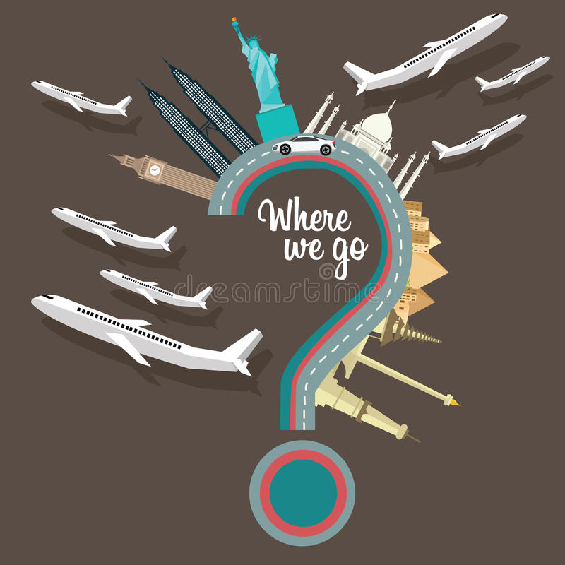

Random recommendations
Not sure where you want to go? Not sure what you want to do? Fret no more! We have created a random recommendations generator for you - simply click the button and let Fate decide your next trip!


Not sure where you want to go? Not sure what you want to do? Fret no more! We have created a random recommendations generator for you - simply click the button and let Fate decide your next trip!